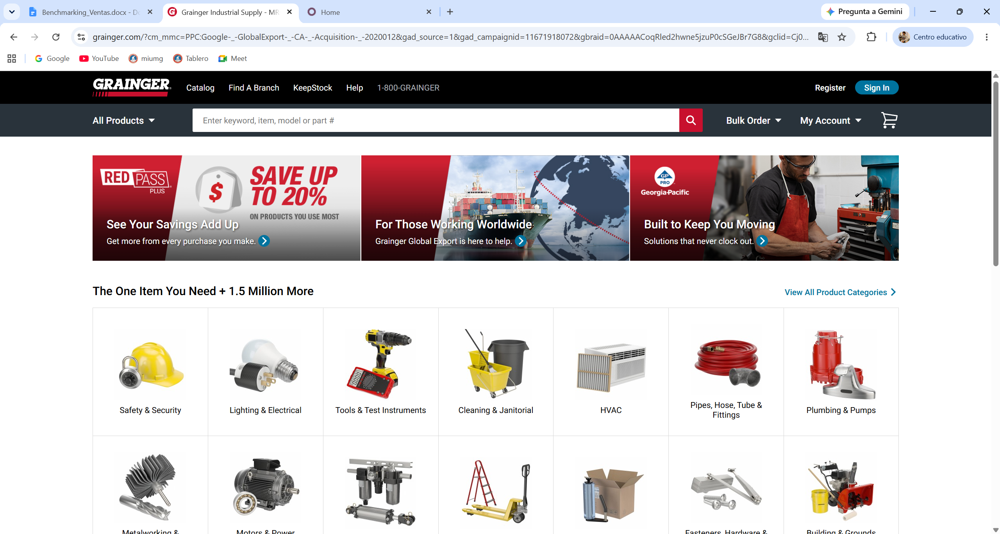
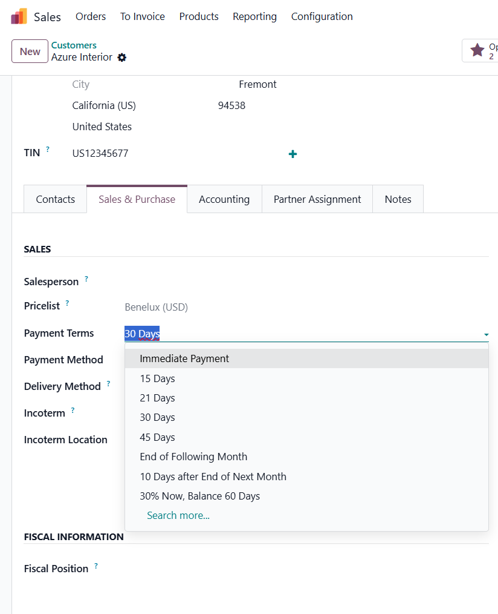
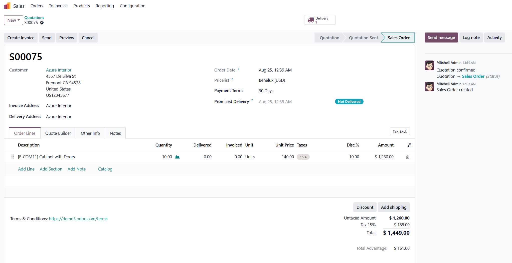
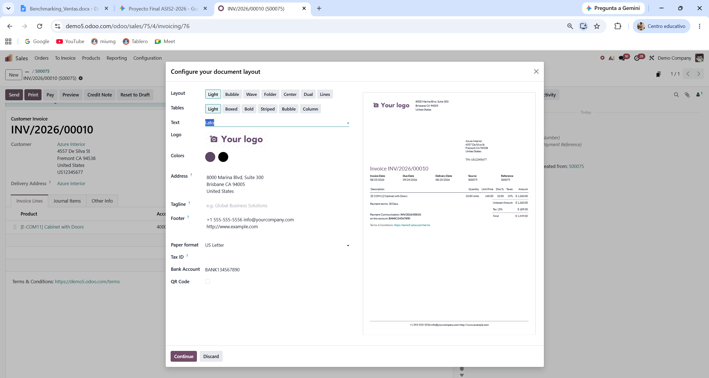
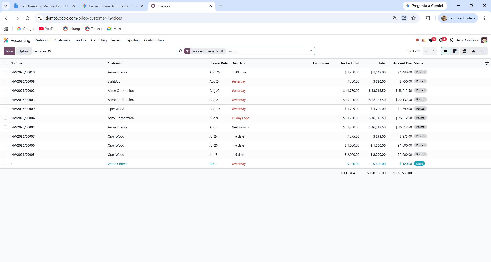
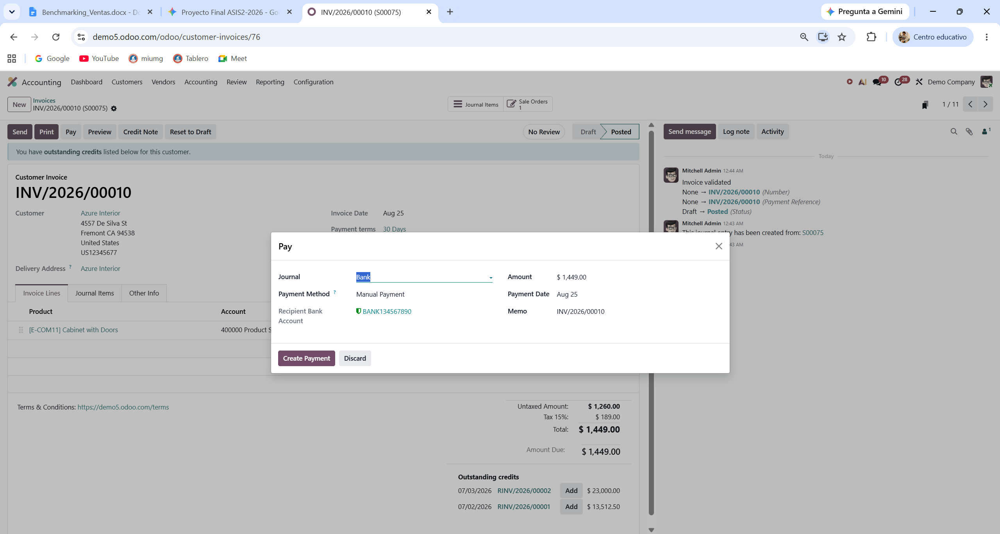
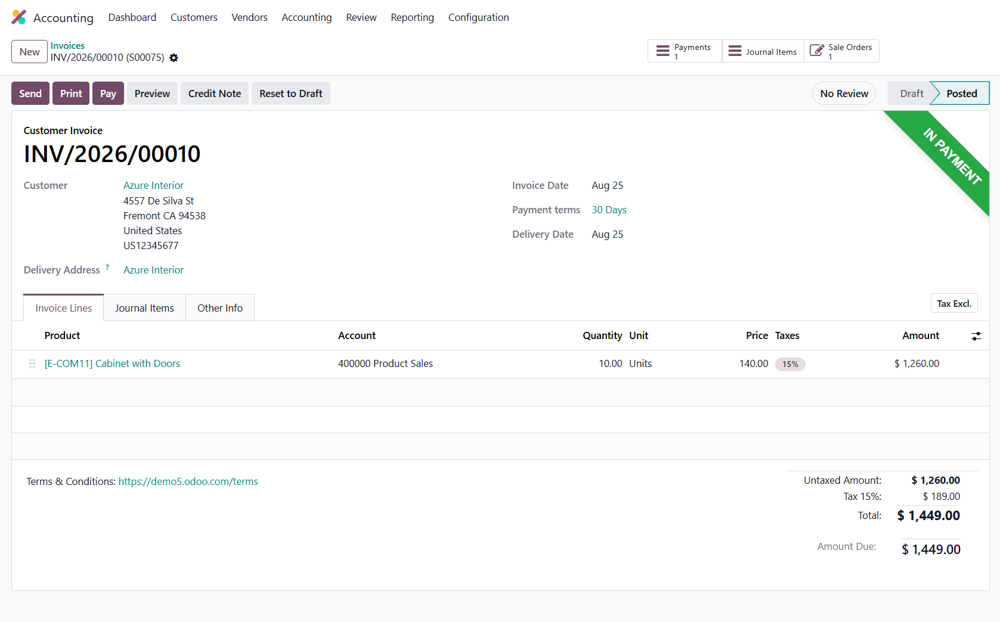

Grainger opera un modelo B2B donde la experiencia del comprador corporativo está totalmente integrada con su perfil financiero:






Comparación técnica entre las capacidades del e-commerce B2B de referencia (Grainger), el módulo estándar de Ventas/Cobros en Odoo y las funciones indispensables que debemos implementar en nuestro ERP propio para Embutidos de Calidad S.A.:
| Funcionalidad / Criterio | Empresa Real (Grainger) | Odoo Demo (Estándar) | Brecha Identificada (Gap) | Requerimiento Indispensable para ERP Propio |
|---|---|---|---|---|
| Control de Cupo en Tiempo Real | Bloqueo inmediato del checkout si el pedido supera el crédito o si hay facturas vencidas. | Muestra advertencias de crédito pero permite avanzar el pedido sin un bloqueo estricto por defecto. | Falta de validación estricta en el e-commerce/portal para detener la emisión de pedidos con saldo moroso. | RF-VEN-01 / RF-VEN-02: Lógica para bloquear la emisión de pedidos si el cliente excede su saldo autorizado o presenta mora en cuentas por cobrar. |
| Condiciones de Crédito Parametrizables | Configuración de plazos Net 15, 30, 60 días vinculados a reglas de comisiones y cobro. | Asignación simple de términos de pago (Ej. 30 días) en la ficha del cliente. | Odoo maneja el plazo pero no lo vincula directamente con la liberación de incentivos comerciales. | RF-VEN-04: Cálculo automático de comisiones a vendedores ligado estrictamente a las ventas liquidadas/cobradas dentro del plazo. |
| Portal de Facturación Corporativa | Portal web avanzado para descarga de facturas, balances de antigüedad y pago consolidado. | Portal de cliente básico para ver pedidos y pagar facturas individuales. | El portal estándar no consolida estados de cuenta por sucursales ni balance de antigüedad. | RF-VEN-06 / Componente Navegador: Pantalla web para consulta de balance de antigüedad de saldos y descarga masiva de facturas por cliente. |
| Aprobación e Integración Contable | Integración inmediata del compromiso financiero con Cuentas por Cobrar y Contabilidad. | Generación de borrador de factura y posterior publicación de la póliza. | Proceso manual de validación si no se configuran flujos automatizados. | RF-VEN-05 / RNF-COM-02: Generación e integración automática de pólizas contables al facturar o registrar cobros en caja. |